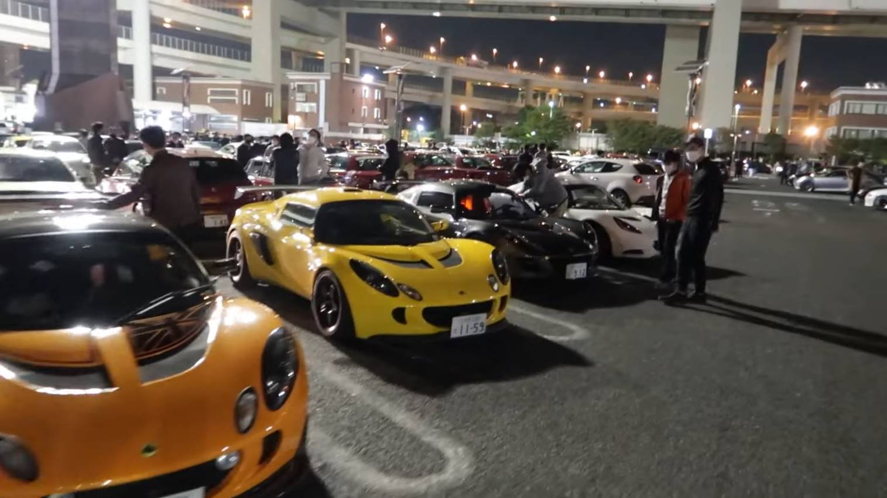

Япония сочетает древние традиции и передовые технологии. Мотоциклы, автомобили, спецтехника — символ точности и культуры.
Исследуй японский инженерный гений и его влияние на мир.
Культовые модели дрифта и турбо эпохи.
Стиль и мощь в каждом движении.
Надежность и инновации.
Электроника и автономность.
От ревущих Skyline и агрессивных Supra до культовых RX-7 и Silvia — японские автомобили стали символом свободы, скорости и инженерного гения. JDM — это больше, чем просто машины, это дух улиц Токио, неон и запах жжёной резины, это дрифт, культура и стиль, который вдохновляет мир.
Японские байки — это слияние скорости, баланса и философии. От лёгких универсалов Honda до легендарных спортбайков Kawasaki Ninja — каждый мотоцикл несёт в себе дух воина самурая на колёсах. Здесь важны не только лошадиные силы, но и стиль, дизайн и уважение к дороге.
Даже рабочие машины в Японии — произведения инженерного искусства. Умные краны, маневренные мини-экскаваторы, невероятно точные роботы-погрузчики — всё продумано до деталей. Это техника, которая не просто работает, а делает это эстетично, технологично и надёжно.
Добро пожаловать в завтра: электрические купе с голосовым ИИ, самоуправляемые капсулы и машины, что паркуются сами. Япония не просто идёт в ногу со временем — она формирует будущее. Инновации здесь — это часть культуры, как каллиграфия или чайная церемония.
Собирает владельцев и фанатов японской классики. Проводится ежегодно в Осаке, атмосфера ретро и дрифт-шоу.
Главная выставка мототехники в Японии. Представлены новинки от Honda, Yamaha, Suzuki и Kawasaki.
Ежегодный праздник, посвящённый запуску первого скоростного поезда в 1964 году. Проводится по всей стране.
Фестиваль передовых технологий, где дроны играют ключевую роль. Интерактивные зоны и выступления.
Японская техника — это философия точности, уважения к деталям и мощи.
Погружение в неё — уважение к культуре, которая ценит качество и прогресс.